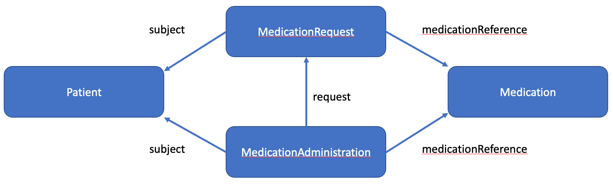

CIBMTR Reporting Implementation Guide
0.1.5 - Trial Use 1
CIBMTR Reporting Implementation Guide
0.1.5 - Trial Use 1
CIBMTR Reporting Implementation Guide - Local Development build (v0.1.5). See the Directory of published versions
Medication-related FHIR resource may be sent to the CIBMTR Direct FHIR API (see R4 connection guide). These profiles are derived from profiles found in the US-Core or mCode Implementation Guides. CIBMTR profiles add a requirement for the meta.security elements to identify your center, and often include bindings to ValueSets for RxNorm codes. They may also require elements previously tagged as optional in the original profiles.
Medication-related resources include Medication, MedicationRequest, and MedicationAdministration. While MedicationRequest and MedicationAdministration are specific for a particular subject, the Medication resource is definitonal and can be reused for different instances, including for different subjects. See figure below
|  |
|---|
| Figure 1: Relationships between different medication-related resources |
medicationReference vs medicationCodeableConceptNote that both MedicationAdministration and MedicationRequest can refer to a Medication resource through the medicationReference element. This has the form of
"medicationReference" : {
"reference" : "Medication/<resource Id>"
}
This is useful when you want to be able to re-use the same medication multiple times, or if the medication description is more complex than a simple RxNorm code (e.g., contains multiple ingredients).
Alternative, you might also reference a medication via the medicationCodeableConcept element. In this case, if the medication can be described as a set of equivalent RxNorm codes (i.e., only one ingredient), the codes may be included inline in the MedicationAdministration or MedicationRequest. Here is an example with multiple RxNorm codes that are effectively equivalent:
"medicationCodeableConcept" : {
"coding" : [
{
"system" : "http://www.nlm.nih.gov/research/umls/rxnorm",
"code" : "4179",
"display" : "etoposide"
},
{
"system" : "http://www.nlm.nih.gov/research/umls/rxnorm",
"code" : "310248",
"display" : "etoposide 20 MG/ML Injectable Solution"
},
{
"system" : "http://www.nlm.nih.gov/research/umls/rxnorm",
"code" : "362972",
"display" : "etoposide Injectable Solution [Vepesid]"
},
{
"system" : "http://www.nlm.nih.gov/research/umls/rxnorm",
"code" : "206832",
"display" : "etoposide 20 MG/ML Injectable Solution [Vepesid]"
}
],
"text" : "ETOPOSIDE 20 MG/ML IV SOLN"
}
reasonCodeBoth MedicationAdministration and MedciationRequest provide an element to describe the reason why a medication has been requested or administered. This is often useful to CIBMTR in understanding the context. Reason codes may be entered in as SNOMED or ICD-10 codes, or both if they are equivalent. For example,
"reasonCode" : [
{
"coding" : [
{
"system" : "http://snomed.info/sct",
"code" : "363346000",
"display" : "Malignant neoplastic disease (disorder)"
},
{
"system" : "http://hl7.org/fhir/sid/icd-10-cm",
"code" : "C80.1",
"display" : "Malignant (primary) neoplasm, unspecified"
}
],
"text" : "Cancer (CMS/HCC)"
}
]
FHIR ValueSets have been created that describe the RxNorm codes for medications described in various sections in CIBMTR Form 2400. These include
Because RxNorm is updated every week, the bindings of the profiles to these valueSets is extensible to allow for new RxNorm codes that did not exist when these value sets were created.
medicationReference - EtoposidemedicationCodeableConcept - Etoposide